Reference Guide
Dice
Every die in Kairos and its six faces — Travel Dice for moving through time, Recovery Dice for restoring articles
Ring
Orange · matches the destination's ring band
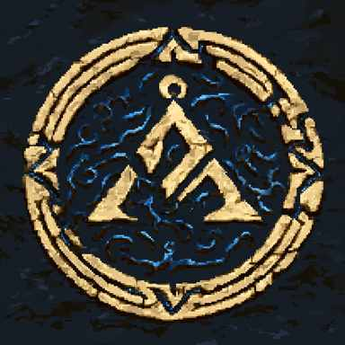
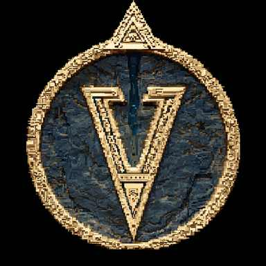
Direction
Black · matches the travel direction
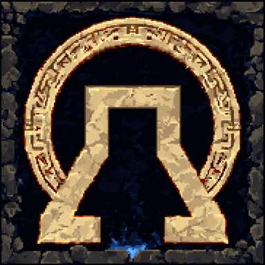
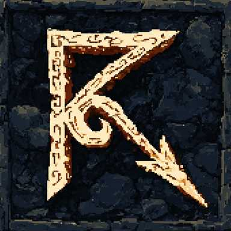
Base
Green · the time-reference / base die
Portal
Blue · bonus — starting next to a portal
Planet
White · the destination / planet die
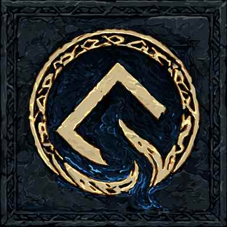
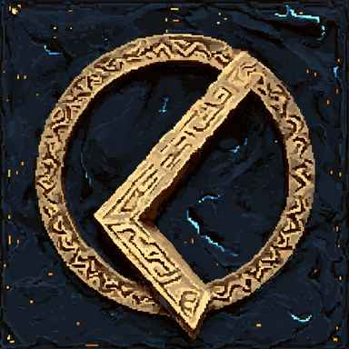
Adjacent
Yellow · bonus — destination is adjacent
TimeLord
Bonus wilds — TimeLord agents only
Hazard
Hazard die — added when timeline ≤ −6
Age
Ageing die — always included in every travel roll
Alpha
AutoAlpha bonus die — 2 wilds, 1 event
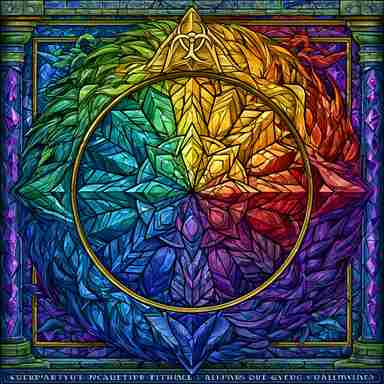
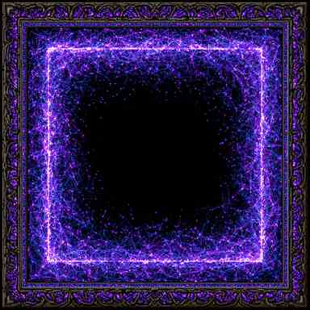
The destination always contributes a Ring, Base and Planet die; the Direction die is added only when the trip crosses eras. Portal, Adjacent, TimeLord, Hazard and Age dice join the pool conditionally (Age is always present). The player rolls up to four times, locking dice between rolls. Wilds substitute for any required value — two skulls means the trip fails.
Recovery Face Legend
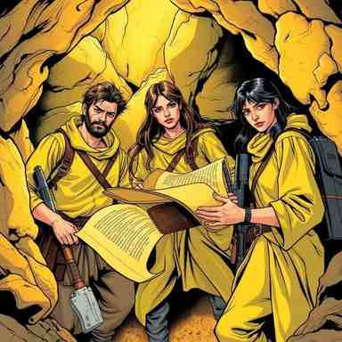
Archaeology
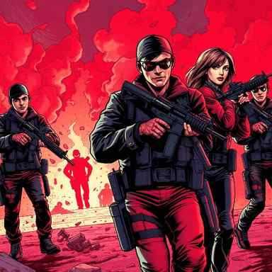
Security
Cyber
Psychic
Medical
Historian
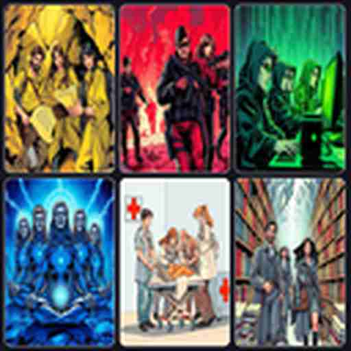
Wild
Event
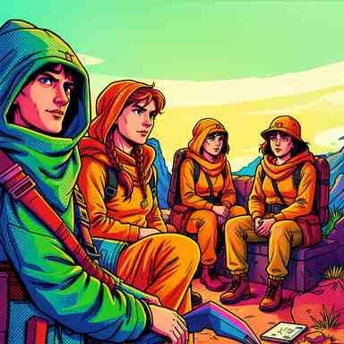
Blank
Hazard
Red
Colour die · covers A·S·C·P·M factors
Blue
Colour die · covers A·S·C·P·H factors
Green
Colour die · A·S·C·P·H plus a Wild
Black
Colour die · S·C·P·H plus Wild & Event
White
Colour die · A·S·C·P·M plus a Wild
TimeLord
Bonus die — TimeLord agents · 2 wilds
Hazard
Hazard die — added when timeline ≤ −6
Alpha
AutoAlpha bonus die — 2 wilds, 1 event
Each article lists the recovery factors it requires (Archaeology, Security, Cyber, Psychic, Medical, Historian). Colour dice are selected so the pool can cover every required factor, with TimeLord, Hazard and Alpha bonus dice added when applicable. The player rolls up to four times and locks dice between rolls; wilds substitute for any factor.